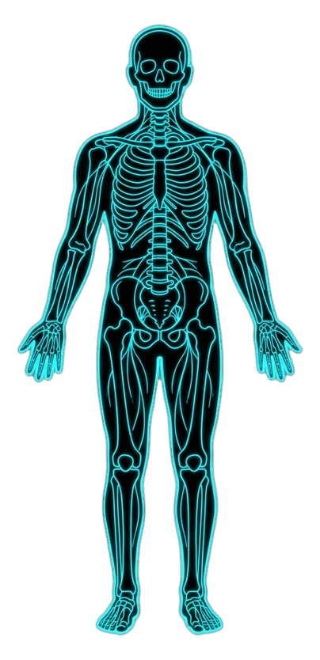

Chrome Map

Active Chrome
Nothing matches that.
Positions
Pick a slot on the chrome map,
then a piece of cyberware.

Nothing matches that.
Pick a slot on the chrome map,
then a piece of cyberware.
Perks change how all your chrome behaves — capacity, how much each piece costs to carry, how many positions a slot has, and what the ripperdoc charges.
No perk matches that.
Linking to the ripperdoc…